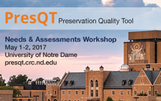

May 1-2, 2017
Location: McKenna Conference Center, University of Notre Dame
Time: May 1st 9AM-5PM & May 2nd 9AM-3PM EDT (GMT +4)
PresQT & All Workshop Resources on OSF
We thank all who participated in the first of two PresQT workshops on May 1-2, 2017 which convened user communities and tool providers engaged in data and software preservation to assess needs, look at the successful tools of today, and brainstorm about the data and software preservation tools of the future.
The PresQT Workshop sessions and talks shared here provide an opportunity to learn from shared experiences, opinions and ideas related to data and software preservation needs. Topics raised in the sessions and talks generated inspiration and discussion that carried over into our panels, our casual coffee break conversations, and will inform our plans for the second scheduled workshop. Please contact This email address is being protected from spambots. You need JavaScript enabled to view it. if you'd like to participate in person or virtually in PresQT Workshop Two, to be held Q4 2017 .
Monday May 1 Brief Program
Tuesday May 2 Brief Program
This email address is being protected from spambots. You need JavaScript enabled to view it. if you have questions or ideas !